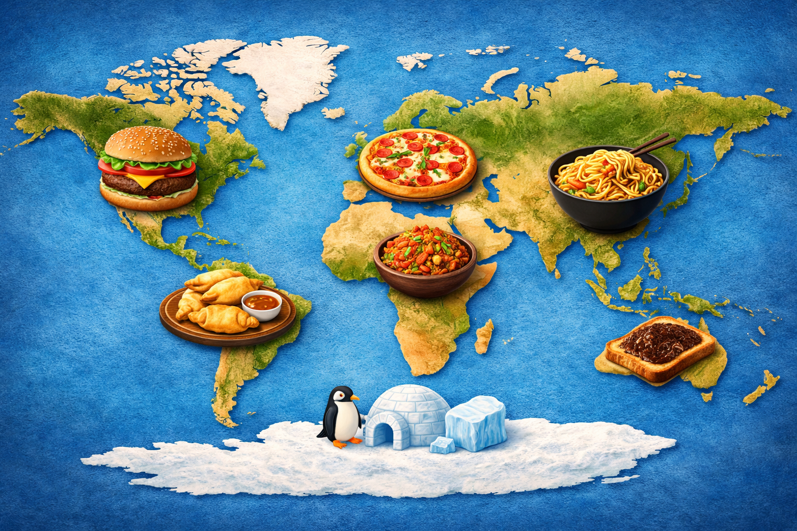
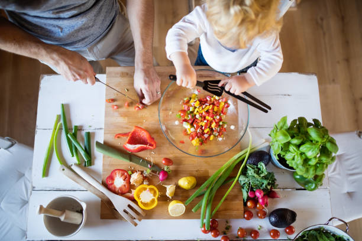
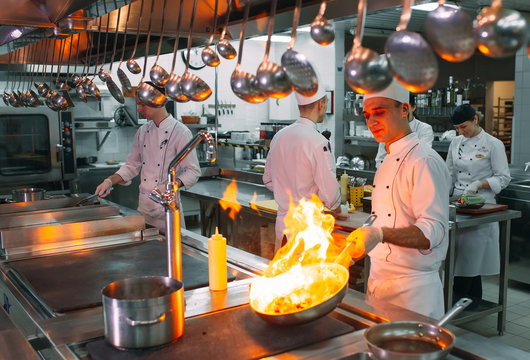

World Book is a global collection of recipes designed to bring cultures together through food. It helps users discover meals from different countries and regions around the world. The platform focuses on simplicity, clarity, and accessibility for all skill levels. Users can explore traditional dishes as well as modern interpretations of classic meals. Each recipe is carefully organized to save time and reduce confusion in the kitchen. The goal is to make cooking enjoyable, educational, and stress-free.

Home cooking is at the heart of World Book and is designed for everyday life. Users can quickly find recipes that fit their available ingredients and time. The instructions are written in a simple and easy-to-follow format. Meals range from quick breakfasts to full family dinners. The platform encourages healthy habits and confidence in the kitchen. Even beginners can feel comfortable preparing meals with clear guidance.
World Book provides inspiration for events both large and small. Recipes are grouped by occasion, making planning easier and faster. Users can prepare meals for parties, holidays, or special celebrations. Each dish includes serving suggestions to help with portion planning. The collection balances presentation and practicality. This ensures events feel special without becoming overwhelming.

The restaurant section is designed for chefs and serious food enthusiasts. Recipes are organized by cuisine, course, and cooking technique. This allows professionals to quickly find inspiration or reliable standards. Dishes focus on consistency, quality, and presentation. The section can support menu planning and culinary creativity. It bridges the gap between home cooking and professional kitchens.